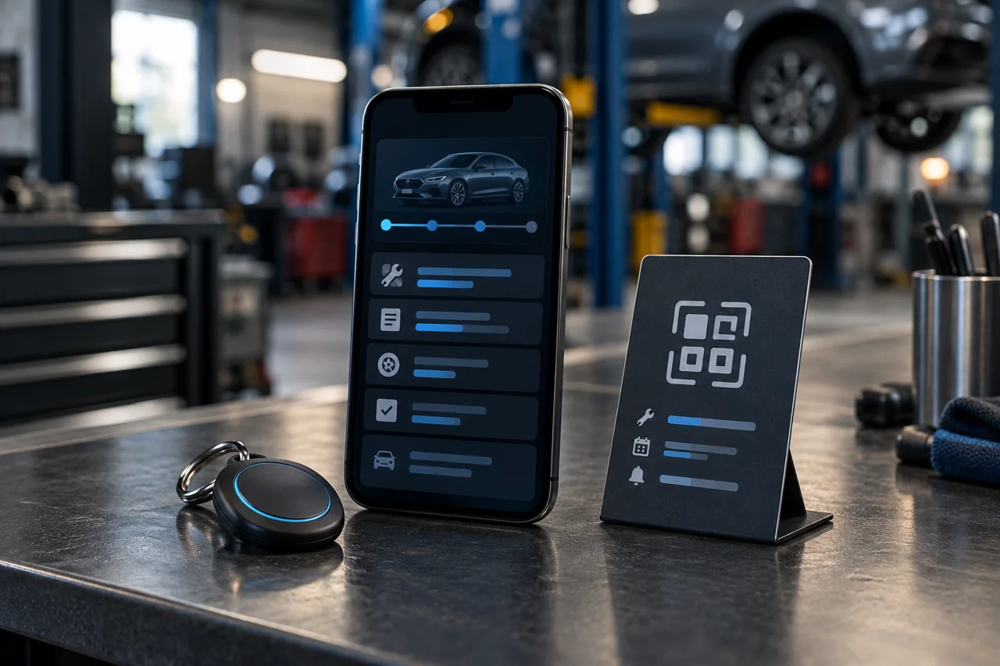
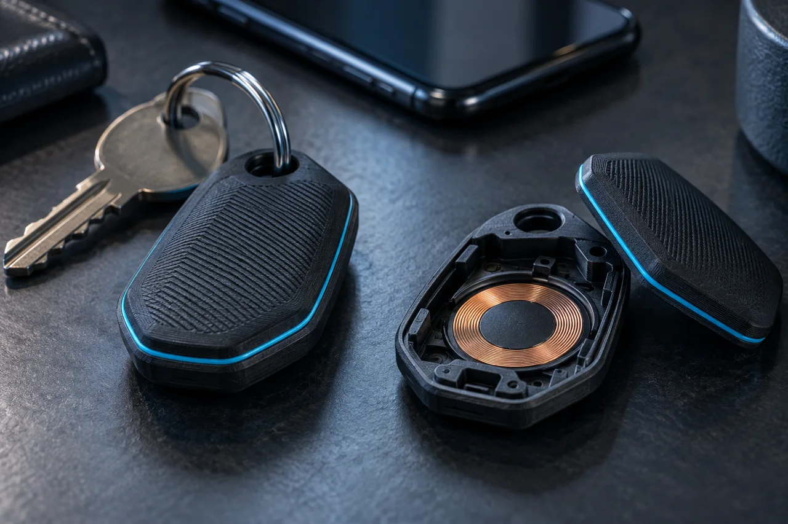
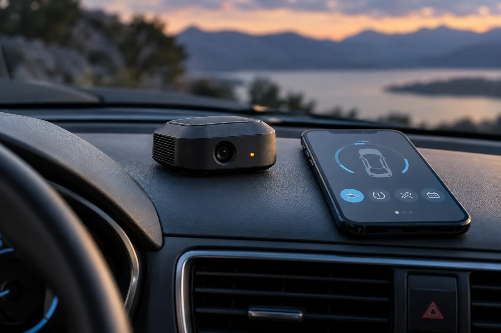

10 projects

Splice Detection Automation
Automation work focused on detecting a splice and integrating that event into a machine workflow.
Engineering project experience
Industrial Metal Detection
A metal-detection automation project completed as part of Jonathan’s professional experience at Continental Tire.
Professional experience · Continental Tire
Automated Industrial Mill
An automated industrial mill developed as Jonathan’s mechatronics engineering thesis project.
Academic engineering project · Thesis
AI Maintenance Copilot
Exploring a faster way to turn voice notes and photos into structured maintenance records.
Independent R&D
JAKS ServiceLoop
An NFC and QR service touchpoint concept for independent automotive workshops.
Independent project
Maintenance Inventory System
A spreadsheet-based approach to finding parts, seeing stock and organizing purchase information.
Independent workflow prototype
NFC Business Touchpoint
Combining a fabricated enclosure with an NFC tag and a useful digital destination.
Independent product development
Smart Home Retrofit Automation
Giving existing equipment automatic operation and device-based control, instead of replacing the entire product.
Independent home automation
Sensor & Signal Development
Exploring component selection and signal conditioning before a sensing prototype is built.
Independent research
JAKS Auto-Buddy
A research concept for keeping vehicle events and maintenance reminders in one place.
Independent conceptNo matches yet.
Try a broader term or another category.